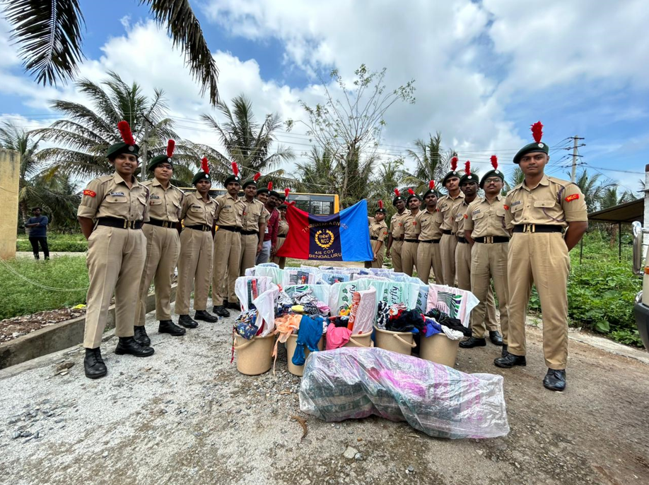

4/6 COY, 7 KAR BN
Kargil Vijay Divas 2024

Date : July 26, 2024
The NCC unit of New Horizon College of Engineering organized a grand event to commemorate the 25th Kargil Vijay Diwas. Held at the Tejas Seminar Hall, the ceremony honored the bravery and sacrifices of Indian soldiers during the Kargil War. The event featured speeches from distinguished guests, a moving candle-lighting tribute, and patriotic performances, instilling a sense of pride and gratitude among the 120 attendees. Through this celebration, the NCC cadets fostered patriotism and a deep appreciation for the valor of our armed forces.
Bandipur Donation
Date : November 16, 2023
New Horizon College of Engineering, along with the 4/6 Coy NCC NHCE, successfully organized an outreach program to support four villages by addressing essential needs and promoting education. NCC cadets distributed clothes, books, and other vital items, carefully planning the logistics and gathering donations through community partnerships. The initiative not only improved living conditions but also strengthened ties between the NCC and local communities. Villagers expressed deep gratitude, and the program fostered a sense of unity. By enhancing educational opportunities and addressing basic needs, this outreach program highlighted the NCC’s role as a positive force in society.
Swachh Bharat Abhiyan

Date : August 5, 2023
The 7 Karnataka Battalion of NCC, including cadets from New Horizon College of Engineering (NHCE) and 12 other colleges, organized a successful "Swachh Bharat Abhiyan" event at Bhagat Singh Park. With MLA CK Ramamurthy and BBMP officials in attendance, the cadets enthusiastically cleaned the park, promoting community-driven cleanliness. A rally by Senior Division cadets, including NHCE, further educated locals about waste management and sustainability. The event concluded with snacks, leaving everyone inspired to embrace cleanliness for a greener future.
Kargil Vijay Divas 2023

Date : July 26, 2023
The 4/6 Coy of the 7 Karnataka Battalion organized a workshop to commemorate Kargil Vijay Diwas, fostering knowledge-sharing and patriotism. With the esteemed presence of CTO Ravikumar and various lecturers, the event strengthened the spirit of NCC among the participants. The workshop featured a PowerPoint presentation and a documentary about the Kargil War, highlighting the valor of the Indian Armed Forces. A two-minute silence was observed to honor the soldiers who sacrificed their lives during the conflict. This workshop served as a tribute to their courage and sacrifice.
Blood Donation Camp

Date : July 7, 2023
The 4/6 Coy, 7 KAR Battalion, NCC at New Horizon College of Engineering organized a successful blood donation camp under the guidance of CTO Ravikumar Sir. The camp aimed to raise awareness about the importance of blood donation, encouraging students, faculty, and staff to contribute to this noble cause. The NCC cadets played a vital role in organizing the event, ensuring safety and comfort for all donors in collaboration with medical professionals from BMST. With strong participation from the college community, the event highlighted NCC’s commitment to social responsibility and humanitarian efforts, making a positive impact on society.
International Yoga Day

Date : June 21, 2023
The 4/6 Coy, 7 KAR Battalion, NCC at New Horizon College of Engineering, in collaboration with ISHA Foundation, Coimbatore, celebrated International Yoga Day. The event, attended by 25 cadets under the guidance of CTO Ravi Kumar Sir, began with a video featuring Sadhguru, who emphasized the importance of yoga in daily life. A volunteer from ISHA Foundation led the session, guiding the cadets through meditation and yogic practices such as yoga namaskar and pranayama. These techniques helped improve flexibility, focus, and overall well-being, motivating cadets to incorporate yoga into their daily routines.